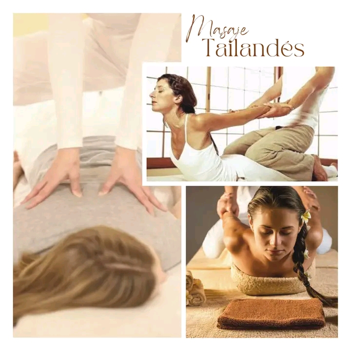

Masaje Tailandes Tradicional
Es un masaje profundo que ayuda a restablecer la energía vital del cuerpo. Este masaje combina técnicas de acupresión y yoga, calmando tención a través de técnicas de estiramientos, preción de pulgares, codos, rodillas e incluso pies.
Los beneficios de un masaje regular son:
- Alivia el dolor crónico
- Aumenta la flexibilidad
- Aumenta la amplitud de movimientos
- Reduce la tensión muscular